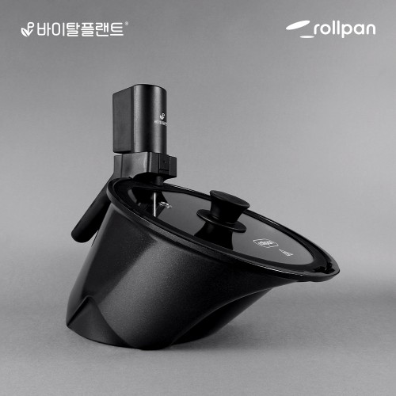
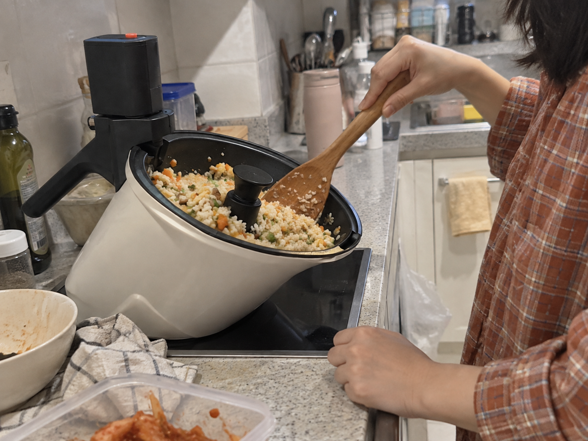
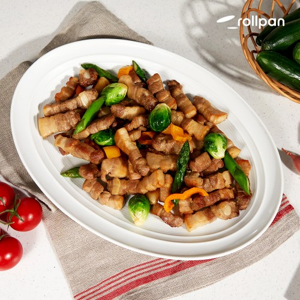
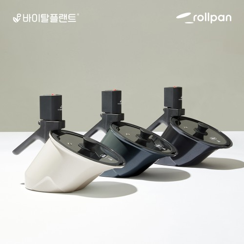

이 포스팅은 네이버 쇼핑 커넥트 활동의 일환으로, 판매 발생 시 수수료를 제공받습니다.
바이탈플랜트 롤팬 NEW 오리지널, 볶음요리 계속 젓는 게 번거롭다면
제육볶음이나 볶음밥을 만들 때는 팬 앞에서 손이 바쁘죠. 재료가 골고루 섞이게 젓는 사이에 곁들일 음식도 준비해야 하고요.
바이탈플랜트 롤팬 NEW 오리지널은 내부 회전 장치로 재료를 섞는 자동회전냄비예요. 볶음요리가 식단에 자주 들어가는 집이라면 그 반복 동작을 덜 수 있다는 점이 구매 이유가 돼요.
1. 젓는 동작 줄이기

핵심은 냄비를 하나 더 사는 것보다 재료를 계속 섞는 과정을 바꾸는 데 있어요. 회전 장치가 재료를 섞는 구조라 볶음 메뉴를 자주 만드는 분에게 쓰임새가 분명해요.

조리 중 불과 익는 상태를 살피는 일은 필요해요. 자동 회전을 요리 전체를 맡기는 기능으로 생각하기보다 반복해서 젓는 일을 보조하는 기능으로 보면 이해하기 쉬워요.
(볶는 동안 다른 준비까지 겹치면 손이 정말 바쁘죠.)
💚 롤팬 자동회전 구조·조리 예시 보기2. 자주 만드는 메뉴

제품을 들인 뒤 어떤 요리를 할지보다 지금 자주 하는 요리부터 떠올려보세요. 제육볶음처럼 재료를 섞는 메뉴가 잦다면 팬의 역할도 바로 그려져요.
판매 상세의 조리 예시는 실제 팬 모양과 재료가 들어가는 모습을 같이 보는 용도예요. 자동 회전이 내 요리에 어떻게 쓰일지 보는 게 기능 이름만 읽는 것보다 구체적이죠.
3. NEW 오리지널 선택

오늘 상품은 NEW 오리지널이고 확인해둔 표시 가격은 119,800원이에요. 비슷한 이름의 제품을 고를 때는 팬 크기와 회전 장치, 사용 가능한 열원을 이 모델 기준으로 맞추면 돼요.
꺼내 쓰는 횟수가 많을 주방템인 만큼 세척과 보관 형태도 같이 보세요. 자주 볶아 먹는 메뉴가 있다면 아래 조리 예시와 구성으로 우리 주방에 둘 이유를 판단할 수 있어요.
(자주 꺼낼 도구여야 주방 자리도 아깝지 않죠.)
볶음요리 때 계속 젓는 과정이 번거로웠다면, 아래에서 NEW 오리지널의 팬 크기와 조리 예시를 확인하고 고르세요.
💚 NEW 오리지널 크기·사용 열원·가격 보기가격은 2026년 10월 6일 확인한 상품 표시 가격으로, 옵션·배송비·구매 시점에 따라 달라질 수 있어요.